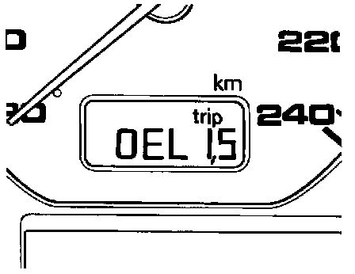

Programming
If the instrument cluster is replaced, the Service Reminder Indicator (SRI) -F27- must be programmed so that the correct displays will appear at the appropriate mileage and time intervals.NOTE: Examples with an odometer displaying miles are used to illustrate the programming steps. The procedure is the same for vehicles with odometers displaying kilometers.
To program SRI displays:
- Switch ignition ON.

- Press and hold odometer reset button (arrow).

- While holding odometer reset button, press lower digital clock reset button -1- or analog clock reset buttons, -2-, and release both buttons.
The programming mode will be activated and "OEL1.S" (distance counter) will be displayed
NOTE: The ".S" at the end of the display means the system is in the setting/programming mode.
SRI programming Counter function
display
OEL1.S Distance counter (miles/km) for engine oil change
OEL2.S time counter for engine oil change every 6 months
IN01.S time counter for maintenance every 12 months
IN02.S Distance counter (miles/km) for maintenance every 30,000 miles (48,000 km)

- With "OEL1. S" indicated on display, press lower digital clock reset button or analog clock reset button.
7500 (miles) or 12,000 (km) indicated on display
Distance can now be set for the next oil change.
Example: The instrument cluster is replaced on a 4 month old vehicle with 5000 miles. The 5000 accumulated miles must be subtracted from the displayed mileage setting of 7500. The new mileage setting should read 2500 (7500 - 5000 = 2500).
- Press lower digital clock reset button or analog clock reset button to decrease mileage setting in intervals of 500 until correct setting is displayed.
After OEL1.S distance counter is set correctly:
- Press odometer reset button.
"OEL2.S" (time counter) indicated on display
- Press lower digital clock reset button or analog clock reset button.
"6" (months) indicated on display
Time can now be set for the next oil change.
Example: In the previous example, the instrument cluster was replaced on a 4 month old vehicle. The accumulated time of 4 months must be subtracted from the displayed setting of 6. The new time setting should read 2 (6 - 4 = 2).
- Press lower digital clock reset button or analog clock reset button to decrease time setting until correct setting is displayed.
After OEL2.S time counter is set correctly:
- Press odometer reset button.
"INO1.S" (time counter) indicated on display
- Press lower digital clock reset button or analog clock reset button.
"12" (months) indicated on display
Time can now be set for the next maintenance interval.
Example: In the previous example, the instrument cluster was replaced on a 4 month old vehicle. The accumulated time of 4 months must be subtracted from the above displayed setting of 12. The new time setting should read 8 (12 - 4 = 8).
- Press lower digital clock reset button or analog clock reset button to decrease time setting until correct setting is displayed.
NOTE: The IN01.S display (usually associated with the 15,000 mile/24,000 km maintenance) is programmed by months only (not distance) and uses the distance counter from the OEL1.S (7500 mille/12000 km oil change) which was set previously
After IN01.S time counter is set correctly:
- Press odometer reset button.
"IN02.S" (distance counter) indicated on display
- Press lower digital clock reset button or analog clock reset button.
30,000 (miles) or 48,000 (km) indicated on display
Distance can now be set for next 30,000 mile (48,000 km) maintenance interval.
Example: In the previous example, the 5000 accumulated miles must be subtracted from the above displayed mileage setting of 30,000. The new mileage setting should read 25,000 (30,000 - 5000 = 25,000).
Press lower digital clock reset button or analog clock reset button to decrease mileage setting in intervals of 500 until correct setting is displayed.
NOTE: The IN02.S display is programmed by distance only (not time) and uses the time counter from the IN01.S (12 month maintenance) which was set previously.
After IN02.S time counter is set correctly:
- Switch ignition OFF.
SRI programming is stored